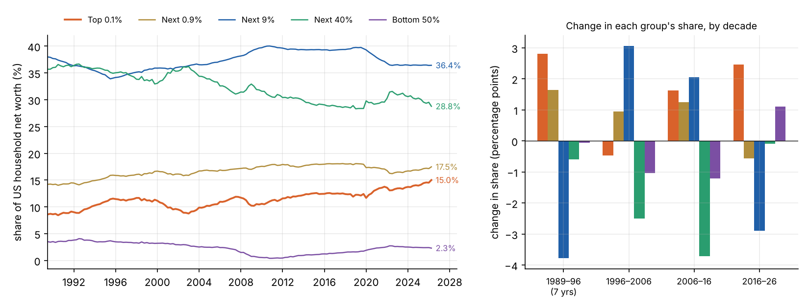
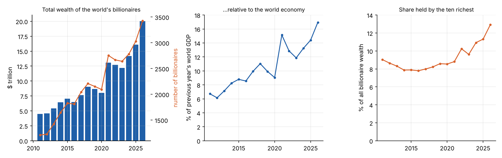
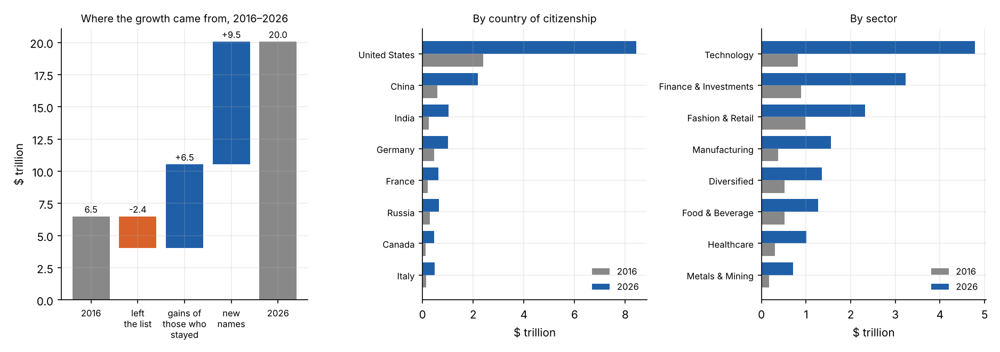
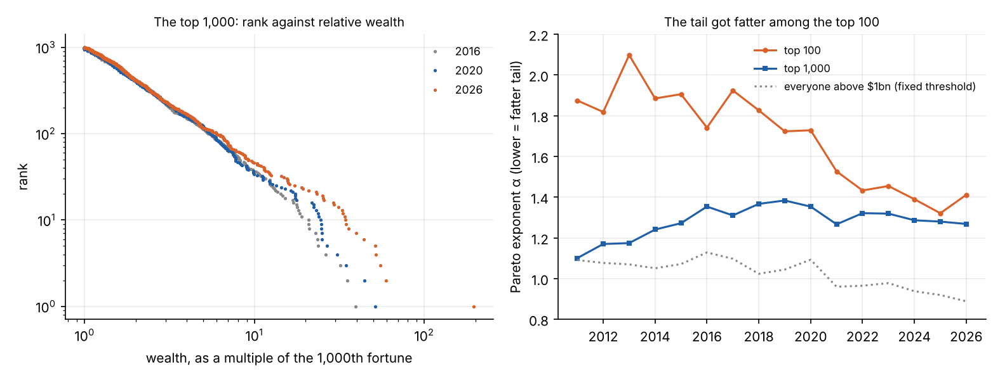
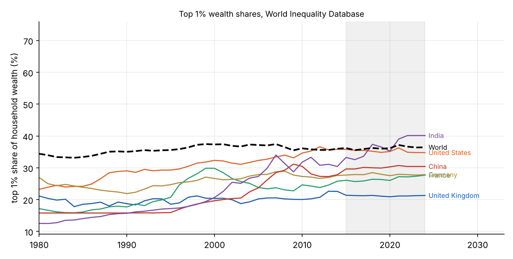

dfaView = {
const host = htl.html`<div></div>`;
const mod = await import(new URL("dfa.js", document.baseURI).href);
await mod.mountDFA(host);
return host;
}It is widely said that wealth has been concentrating in fewer and fewer hands, faster than ever. This series tries to work out whether that is true, why it has happened, which feedback loops are involved, and what has ended such episodes in the past. The plan is:
- What the data shows (this part).
- The candidate causes, each tested against data: interest rates, superstar firms and network effects, private markets, tax, labour, globalisation, the pandemic and the AI boom.
- A model of the feedback loops, and what it predicts about the shape of the distribution.
- How concentrations of wealth have ended historically, and what would have to happen for this one to level off, reverse or persist.
- The strongest counter-arguments and the limits of the measurements.
The series is about what happened and why. Whether it is a problem, and what if anything should be done, are separate questions on which people reasonably disagree, and I will try to keep them apart.
The short answer
- At the very top, concentration has accelerated. The world’s billionaires went from $6.5 trillion in 2016 to $20.1 trillion in 2026, doubling relative to the world economy after rising by a quarter in the five years before. In the US, the share of household wealth held by the top 0.1% rose from 12.6% to a record 15.0%. That is faster than its long-run pace, though not unprecedented: the ten years to 2013 saw a larger rise.
- Below the very top, it has not. The rest of the US top 1% lost share over the decade, the next 9% lost more, and the bottom half gained. In the World Inequality Database, the top 1% share of wealth is flat since 2015 for the world, the US and the UK.
- It happened in two bursts, 2020–21 and 2023–26, not steadily.
- It was carried by listed shares. Two-thirds of the top 0.1%’s gain was corporate equity, and most of the rise in their share comes from shares outgrowing every other kind of asset.
- It is concentrated even among billionaires. Ten people account for a third of the gains of those who were billionaires throughout.
So the claim in its usual form needs sharpening. Among billionaires the acceleration is clear and recent. In the broader US data it shows up as a record share for the top thousandth and a faster pace since 2020, while everyone else in the top 10% lost ground.
Three sources
| Source | What it measures | Covers |
|---|---|---|
| Federal Reserve, Distributional Financial Accounts (DFA) | Net worth of US households by wealth group, by type of asset | US, quarterly, 1989 to 2026 Q2 |
| Forbes World’s Billionaires lists | Estimated net worth of each billionaire | World, annual (March), 2011 to 2026 |
| World Inequality Database (WID), via Our World in Data | Top wealth shares, estimated from tax, survey and national accounts data | Many countries, annual, to 2024 |
Each has weaknesses, covered at the end. They measure different things, and where they disagree that is informative.
The United States, by wealth group
The DFA splits households into five groups by net worth: the top 0.1% (about 130,000 households), the next 0.9%, the next 9%, the next 40%, and the bottom half.

| 1989 | 2006 | 2016 | 2026 | Change 2016–26 | |
|---|---|---|---|---|---|
| Top 0.1% | 8.6% | 10.9% | 12.6% | 15.0% | +2.5 |
| Next 0.9% | 14.2% | 16.8% | 18.0% | 17.5% | −0.6 |
| Next 9% | 38.0% | 37.3% | 39.3% | 36.4% | −2.9 |
| Next 40% | 35.7% | 32.6% | 28.9% | 28.8% | −0.1 |
| Bottom 50% | 3.5% | 2.4% | 1.2% | 2.3% | +1.1 |
Three things stand out.
The top 0.1% pulled away from the rest of the top 1%. In the decade to 2016, the whole of the top 10% gained together. In the decade since, only the top thousandth did. The top 1% as a whole rose from 30.6% to 32.5%, a smaller rise than in the previous decade (27.7% to 30.6%).
The pace is above average, but not a record. The top 0.1% share has risen by an average of 0.17 points a year since 1989, by 0.25 a year over the last decade, and by 0.40 a year since the end of 2019. The share is now the highest in the series. But the size of a ten-year change depends heavily on where the window starts. Measured from the trough after the dot-com crash, the ten years to early 2013 saw a rise of 3.2 points, more than the latest 2.5. On this source alone, the last decade is a strong continuation of a 35-year trend more than a break from it.
The bottom half gained, from a very low base. Its share bottomed out at 0.4% at the end of 2010, after the housing crash wiped out much of its home equity. It has since recovered to 2.3%, still below the 3.5% of 1989. In real terms its net worth nearly tripled between 2016 and 2026. The top 0.1%’s rose by a factor of 1.85, and the groups in between by about 1.5.
The timing was uneven. The top 0.1% share was flat from 2016 to the end of 2019 (12.6% to 12.4%). It rose 1.4 points in 2020–21, fell half a point in 2022, and rose another 1.7 points to mid-2026.
All groups grew richer in real terms over the decade. Total household net worth went from $86 trillion to $186 trillion, against a 39% rise in prices. What changed is how the total was divided.
Explore the data
The world’s billionaires
The Forbes list gives a view of the extreme top across the world.

| 2011 | 2016 | 2021 | 2026 | |
|---|---|---|---|---|
| Billionaires | 1,209 | 1,811 | 2,754 | 3,428 |
| Total wealth | $4.5tn | $6.5tn | $13.1tn | $20.1tn |
| As a share of world GDP | 6.7% | 8.6% | 15.1% | 16.9% |
| Held by the ten richest | 9.0% | 7.8% | 8.8% | 12.9% |
Relative to the world economy, billionaire wealth rose by a quarter in the five years to 2016 and then doubled in the ten years after. As in the US data, it came in bursts: a jump in the year to March 2021, a fall back to 11.9% by 2023, and a new high in 2026.
Where the growth came from

- Those on both lists (1,068 people) saw their combined wealth rise from $4.0 trillion to $10.5 trillion, a factor of 2.6. Over 2011–16 the equivalent factor was 1.2. The typical member did less well, with a median factor of 1.7, because the gains were concentrated: the ten largest gainers account for 34% of the group’s gains, and one person for 13%.
- New names (2,359) hold $9.5 trillion. This overstates new fortunes, because heirs who inherit appear as new names, as do people whose names Forbes records differently between years.
- By country, the US accounts for $6.0 trillion of the $13.6 trillion rise, and its share of billionaire wealth went from 37% to 42%. China added $1.6 trillion and India $0.8 trillion.
- By sector, technology added $4.0 trillion and went from 13% to 24% of the total. Finance and investments added $2.3 trillion.
- Forbes classes about two-thirds of this wealth as self-made rather than inherited (63% in 2016, 68% in 2026).
American billionaires, 541 people in 2016 and 991 in 2026, held wealth equal to 2.8% of US household net worth in 2016 and 4.9% in 2026. That two-point rise is about the same size as the whole rise in the top 0.1%’s share. The two sources are built differently and cannot simply be subtracted, but the comparison suggests that most of the top 0.1%’s gain is the gain of about a thousand people within it.
The shape of the tail
Among the very rich, wealth follows a Pareto distribution: the number of people with more than \(w\) falls off as \(w^{-\alpha}\). On a plot of rank against wealth with both axes logarithmic, that is a straight line with slope \(-\alpha\). A smaller \(\alpha\) means a fatter tail, with more of the total held by the few at the top.

How the exponent is measured matters. Estimated over everyone above $1 billion, it fell from 1.13 in 2016 to 0.89 in 2026. That figure is misleading. The distribution is not an exact Pareto, and as the whole list grows richer past a fixed $1 billion line, the estimate drifts down whether or not the shape has changed.
Measured over a fixed number of people, the picture is more specific:
- For the top 1,000, the exponent has barely moved since 2016 (1.35 to 1.27).
- For the top 100, it was about 1.8 before 2020 and has been about 1.4 since.
On the left-hand chart the three years lie on top of one another from rank 1,000 up to about rank 100, and separate above it. The ten richest held 9.4% of the wealth of the top 1,000 in 2016, 10.7% in 2020 and 17.4% in 2026.
So the change in shape is confined to roughly the hundred largest fortunes, and it dates from 2020. Below that, the world’s billionaires are distributed much as they were ten years ago. Part 3 builds a model of why.
Other countries

| Top 1% share | 1995 | 2005 | 2015 | 2024 |
|---|---|---|---|---|
| World | 35.6% | 37.2% | 36.2% | 36.4% |
| United States | 29.3% | 32.3% | 35.8% | 34.8% |
| United Kingdom | 18.6% | 20.2% | 21.4% | 21.3% |
| France | 20.7% | 23.8% | 26.1% | 27.7% |
| Germany | 24.7% | 27.9% | 27.7% | 27.8% |
| China | 15.9% | 23.7% | 29.6% | 30.4% |
| India | 17.2% | 27.3% | 33.2% | 40.1% |
On this measure, the large rises came before 2015: in the US from the 1980s, and in China and India from the 1990s. Since 2015 the top 1% share has been roughly flat for the world, the US, the UK and Germany. India is the exception.
This is consistent with the US picture above. The recent change is not visible at the level of the top 1%. It is happening inside the top 1%, at the level of the top 0.1% and beyond.
For the UK, a caution: the official Wealth and Assets Survey is known to under-record the very wealthy. The Resolution Foundation estimated in 2021 that the top 1% held almost £800 billion more than the survey showed. A later part will look at the UK in more detail.
What is uncertain
- The sources disagree on levels. For the US top 1% in 2024, the DFA gives about 31% and WID about 35%. They use different methods and units (households against adults).
- Estimating top wealth from tax data is contested. Wealth is not reported to tax authorities, so it is inferred from the income it generates. Saez and Zucman’s estimates show a large rise in the top 0.1% share since
- Smith, Zidar and Zwick, allowing returns to differ between people, find a rise about half as large. A similar dispute exists for incomes between Piketty, Saez and Zucman on one side and Auten and Splinter on the other.
- What counts as wealth matters. None of these sources counts the value of future state pensions. Catherine, Miller and Sarin estimate that including US Social Security entitlements removes most of the rise in top wealth shares since 1989, because those entitlements are large for ordinary households and have grown as interest rates fell. Whether an entitlement that cannot be sold or inherited is wealth in the same sense is itself debated.
- The very top is the least well measured. The survey underlying the DFA excludes the Forbes 400 by design. Forbes’s figures are journalists’ estimates: reliable for stakes in listed companies, rough for private holdings.
- These are valuations, not cash. A fortune held in one company’s shares can halve in a year. The 2022 fall shows the series can go down as well as up.
None of these overturns the main finding, since the disputes concern levels and long-run trends more than the last decade at the extreme top. But they mean the numbers carry real uncertainty, and that the statement “inequality has risen” depends on which measure and which part of the distribution is meant.
What needs explaining
The data narrows the question for the rest of the series:
- Why did listed equity become worth so much more relative to the economy, with the ratio nearly doubling in ten years?
- Why is so much of that equity held by so few, and why did a handful of founders’ stakes grow fastest of all?
- Why did the rise come in two bursts, in 2020–21 and 2023–26, after three flat years?
- Why is it most pronounced in the US, and in technology?
- Why did the hundred largest fortunes pull away from the rest after 2020 and not before?
Part 2 takes the candidate explanations one at a time and tests each against these facts.
The data comes from public sources and is downloaded by fetch_data.py; the analysis and figures are in part1.py in the same folder.
References
- Board of Governors of the Federal Reserve System, Distributional Financial Accounts, data to 2026 Q2. Method: M. Batty et al., “Introducing the Distributional Financial Accounts of the United States”, Finance and Economics Discussion Series 2019-017.
- Forbes, World’s Billionaires lists, 2011 to 2026.
- World Inequality Database, top 1% net personal wealth shares, via Our World in Data.
- World Bank, world GDP in current US dollars.
- E. Saez and G. Zucman, “Wealth inequality in the United States since 1913: evidence from capitalized income tax data”, Quarterly Journal of Economics 131(2), 519–578 (2016).
- M. Smith, O. Zidar and E. Zwick, “Top wealth in America: new estimates under heterogeneous returns”, Quarterly Journal of Economics 138(1), 515–573 (2023).
- G. Auten and D. Splinter, “Income inequality in the United States: using tax data to measure long-term trends”, Journal of Political Economy 132(7) (2024); and the reply by T. Piketty, E. Saez and G. Zucman, “Income inequality in the United States: a comment” (2024).
- S. Catherine, M. Miller and N. Sarin, “Social Security and trends in wealth inequality”, Journal of Finance (2025).
- Resolution Foundation, “Top 1 per cent has almost £800 billion more wealth than official statistics show” (2021).